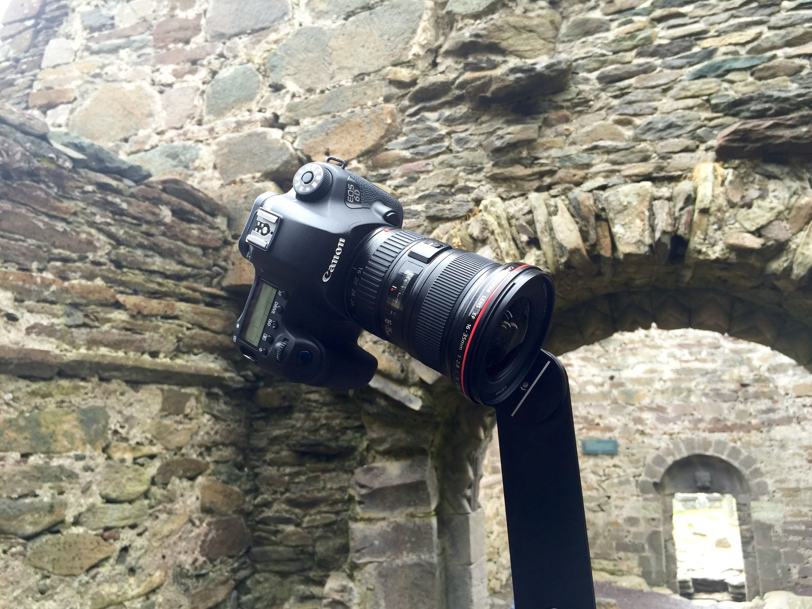
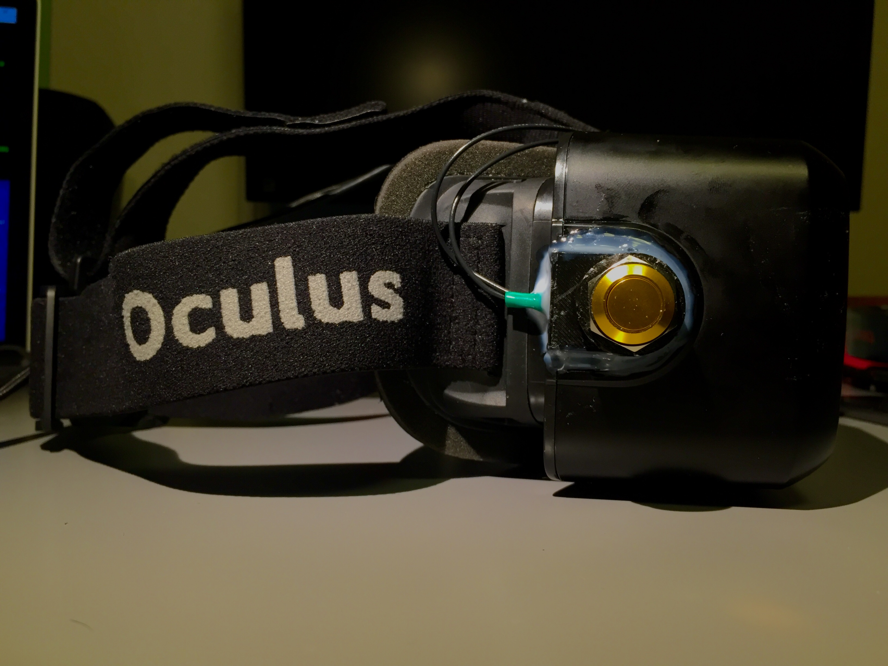

McMullen Virtual Reality
For the Spring 2015 exhibit at the McMullen Museum of Art on campus at Boston College my research advisor Prof. Nugent asked me to look at innovative ways to bring digital humanitites into the mix. The art exhibit was centered around the Irish Arts and Crafts movement for the 100th anniversary of Irish Independence. I spitballed a few ideas, but the suggestion of using Virtual Reality to allow users to visist the areas around where the pieces of art they were looking at came from was the one we were most excited about. In the end, I ended up shooting stitching and building my first complete project in VR. I budgeted out costs for an Oculus DK2, a new PC and some rental camera equipment with which I travelled thoughout the Irish countryside twice shooting panoramas.
Next I stitched everything together in PTGui and Photoshop and brough each panorama into Unity as skyboxes in seprate scenes. I wrote a script to change the scene and wired up some buttons to the sides of the Oculus that sat in 3D printed housings to let users adjust what they were seeing. I soldered the buttons to a mini keyboard that was mounted to the front of the Oculus so that one button on the right of the headset would map to the character 'n' for next, and the other button mapped to 'p' for previous.
 Control button sitting in a 3D printed mount.Although the scope of this project was technically simple, it was exciting to watch users inside of the experience– it was the first VR experience for nearly every user. Given that the VR installation sat inside of an art museum, the majority of the users were over the age of 60. The project didn't need to be done in 3D, or offer any gaze-based interactivity. The medium was so foreign to them, that just instructing them to move their heads once they put the headset on was enough. Regardless of how simple this expereince was however, it proved to me the power of Virtual Reality as a tool for storytelling.